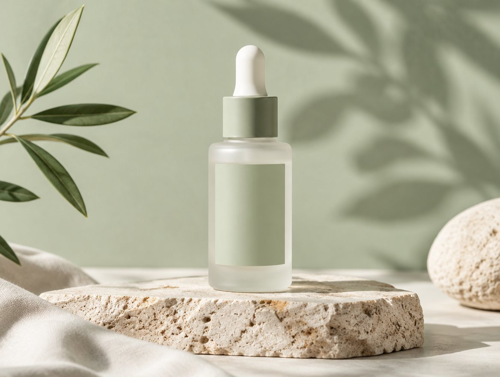

Skincare · 2 min read
5 reasons sensitive skin is switching to a 4-ingredient serum
Less in the bottle, less for your skin to react to.

See the serum✓ Fragrance-free✓ 30-day returns
1
Four ingredients, all listed up front
Niacinamide, squalane, panthenol and water. Nothing hidden behind "fragrance".
2
It calms instead of stinging
No alcohol, no essential oils, no acids. Made for skin that reacts to everything.
3
One step replaces three
It hydrates, evens tone and preps for SPF, so the routine gets shorter.
4
Dermatologist-tested on sensitive skin
Tested before launch, with the panel results on the product page.
5
You can return it, even opened
30 days to try it. If your skin doesn't like it, you get your money back.
Mira Calm Serum, 30 ml€34 · or €58 for twoShop Mira
Sample review
★★★★★
"First serum in years that didn't make my cheeks red."
Clara, Ghent